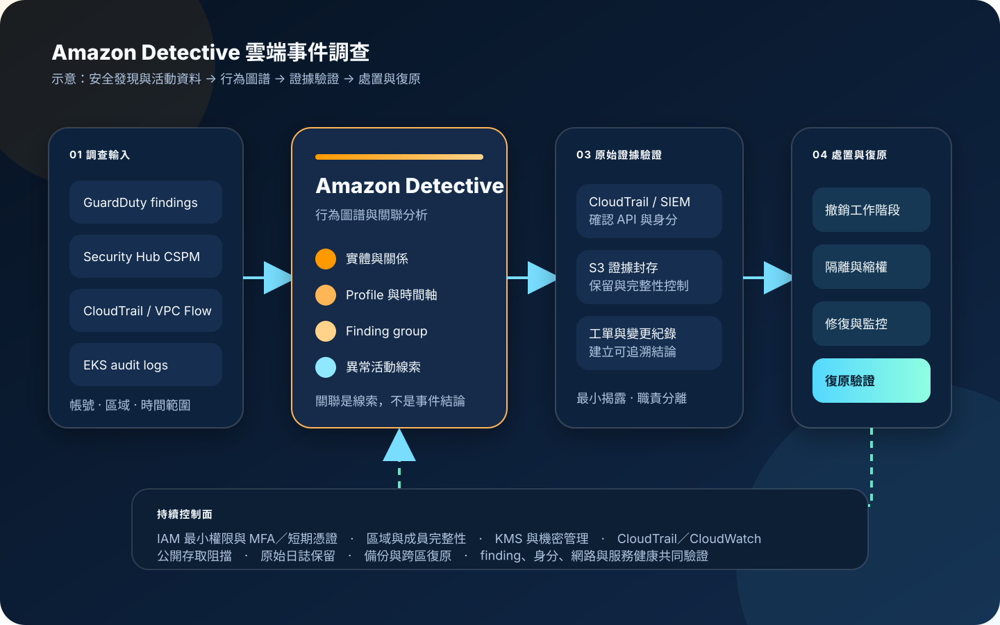

Amazon Detective：行為圖譜與事件調查
Amazon Detective 將 AWS 活動紀錄與安全發現轉換為可關聯的行為圖譜，協助分析帳號、身分、執行個體、IP 位址與 Kubernetes 實體之間的活動。服務可縮短蒐集與交叉比對資料的時間，但不會代替偵測告警、證據保全、根因判定、隔離處置或復原決策。
作者：Dr. William｜查閱與發布：2026-11-07
服務定位
Amazon Detective 會處理結構化的 AWS CloudTrail 活動、Amazon VPC Flow Logs、Amazon EKS 稽核紀錄、Amazon GuardDuty findings，以及透過 AWS Security Hub CSPM 整合的 findings，將資料映射為實體、關係、活動時間序列與分析結果。分析人員可從 finding、finding group 或特定實體進入調查，調整時間範圍，查看異常活動、關聯資源與歷史基準。
Detective 的核心價值是減少人工查找與拼接多種資料的時間。它適合回答「哪個身分在事件前後做了什麼」「某個 IP 與哪些資源互動」「多個 finding 是否可能屬於同一事件」等問題。它不能單獨證明惡意意圖，也不能取代完整 CloudTrail trail、集中日誌、端點與應用程式紀錄、取證映像、事件工單或人工判斷。
核心概念與服務邊界
資料與圖譜
- Behavior graph：以一個或多個 AWS 帳號的來源資料建立實體、屬性、關係與活動趨勢。
- Entity：可代表 AWS 帳號、IAM 主體、EC2、EKS 叢集、Pod、容器映像、IP 位址等調查對象。
- Relationship：描述實體間的活動，例如 IP 與 EC2 的連線，或身分對 AWS API 的呼叫。
- Profile：以時間軸、表格、長條圖、地理位置與統計摘要回答特定調查問題。
- Scope time：控制分析顯示的事件時間窗；錯誤時間窗可能漏掉事件前兆或後續活動。
調查與治理
- Finding group：以內建模型關聯可能屬於同一事件的 findings、實體與證據，仍需人工驗證。
- Evidence：從近期圖譜活動識別的補充線索，以資訊性 finding 呈現，不等同定罪證據。
- Administrator：擁有行為圖譜並管理成員帳號、使用量與調查存取。
- Member account：貢獻資料至行為圖譜；一般成員不能瀏覽其他成員的圖譜資料。
- Organizations 整合：可指定 Detective 管理員並集中管理組織帳號，但設定與圖譜仍具有區域性。
適合與不適合的使用情境
適合
- GuardDuty 或 Security Hub CSPM 出現 finding 後，需要快速檢視相關身分、資源、IP 與歷史活動。
- 多帳號環境需要集中調查，並讓安全團隊在單一行為圖譜中查看成員帳號的關聯資料。
- 需要比較某個 IAM 主體的 API 活動與既有基準，找出異常呼叫、流量突增或不常見關係。
- EKS 環境需要把 Kubernetes 稽核活動與 AWS 身分、網路流量及安全 findings 交叉分析。
- 事件應變流程需要從告警分流，快速建立調查假設、影響範圍與下一步證據蒐集清單。
不適合或不能單獨完成
- 把 Detective 當成 GuardDuty 的替代品，期待服務主動產生完整威脅偵測告警。
- 把行為圖譜當成法遵所需的原始日誌永久保存庫，卻沒有獨立的 S3 日誌封存與保留政策。
- 需要分析作業系統程序、記憶體、應用程式交易內容、資料庫查詢或未納入來源的 SaaS 活動。
- 期待 finding group 自動判定事件真偽、根因與責任，或直接執行停權、隔離及刪除。
- 只有單一區域已啟用，卻假設跨區工作負載與所有組織帳號都已納入同一圖譜。
示意故事案例：異常角色工作階段的調查
以下為示意案例，不代表特定企業或正式部署。 一家線上服務公司的 GuardDuty 發現某個維運角色在非慣用地理位置呼叫敏感 API。安全人員先在工單記錄 finding 識別、發生時間與受影響帳號，再由 Detective 開啟該 finding 的調查頁面，將 scope time 擴展到事件前後數小時。
行為圖譜顯示同一角色工作階段先查詢資源清單，接著與一個過去未出現的外部 IP 建立關聯，並對多個區域發出 API 呼叫。分析人員檢查 finding group 的相關實體，回到原始 CloudTrail 與集中日誌保存完整事件，並比對身分提供者、變更紀錄與值班資訊。調查期間不把任何憑證或工作階段秘密複製到工單與聊天工具。
團隊依證據決定撤銷工作階段、暫停角色、隔離受影響資源並輪替相關應用機密。復原後重新檢查 GuardDuty、Detective、CloudTrail 與工作負載健康，確認沒有持續活動，再完成根因、影響範圍與改善項目的核准。

建置與運作流程
- 定義調查目標：列出預期處理的 finding 類型、帳號、區域、工作負載、值班角色與事件分級。
- 建立管理邊界：在 AWS Organizations 指定獨立安全帳號為 Detective 管理員，避免日常工作負載帳號同時管理調查圖譜。
- 逐區域啟用：依實際資源與 GuardDuty 部署逐區建立行為圖譜，確認管理員與成員關係一致。
- 納管成員帳號：核對組織帳號、自動啟用策略、外部邀請與離開組織後的處理程序。
- 設定最小權限：分析人員透過 IAM Identity Center、MFA 與短期憑證存取；圖譜管理、調查、證據匯出與處置角色分離。
- 確認資料來源：驗證 CloudTrail、VPC Flow Logs、GuardDuty、Security Hub CSPM 與選用 EKS 稽核資料的涵蓋範圍。
- 建立基準：讓圖譜累積正常活動，記錄各帳號與區域的資料量、常見實體、角色與調查限制。
- 串接事件入口：從 GuardDuty 或 Security Hub CSPM finding 導入調查，工單只保存必要識別、時間、結論與證據位置。
- 界定時間範圍：以 finding 首次與最後觀察時間為起點，向前尋找前兆、向後確認橫向活動及持續性。
- 驗證關聯：檢查 finding group、實體 profile、IP、API、流量與 Kubernetes 活動，區分統計異常與實際惡意行為。
- 回查原始證據：在受控 S3 日誌封存、CloudTrail Lake、CloudWatch Logs 或 SIEM 取得可保存的原始紀錄。
- 執行處置：依事件程序撤銷工作階段、縮限 IAM、隔離網路、停用公開存取、輪替 Secrets Manager／Parameter Store 內的機密。
- 監控管理活動：以 CloudTrail 稽核 Detective 的管理與成員操作，以 CloudWatch／EventBridge 監控事件流程、整合失敗與成本異常。
- 保存調查成果：證據儲存區啟用 S3 Block Public Access、版本控制、Object Lock 或等效保留、KMS 加密與最小權限。
- 驗證復原：確認安全 finding、API 活動、網路流量、身分狀態、工作負載健康、備份還原與跨區復原符合結案條件。
成本、可用性與維運考量
Detective 主要依每個帳號、每個區域、每月匯入的資料量計費。計價資料包含 CloudTrail、VPC Flow Logs、EKS 稽核紀錄、GuardDuty findings，以及整合至 Security Hub CSPM 的 findings。服務啟用後應查看使用量與預估成本，分別找出高流量帳號、區域與資料來源；CloudTrail、VPC Flow Logs、Security Hub CSPM、GuardDuty、S3、KMS、CloudWatch、CloudTrail Lake 或 SIEM 的費用另行計算。
官方定價頁說明 Detective 可維持最長一年的彙總資料供分析，但這不等同原始日誌保留、不可變證據或所有事件欄位的完整保存。法遵與取證仍應依資料分類建立獨立封存、保留、合法存取與刪除機制。成本優化不能以停用關鍵來源或縮減原始日誌為唯一手段，應先改善不必要流量、帳號生命週期及調查範圍。
Detective 與行為圖譜具有區域性。多區架構必須確認各區都已啟用、成員一致且有替代調查路徑。服務或整合暫時不可用時，GuardDuty、CloudTrail、集中日誌、網路隔離、公開存取控制、KMS、機密管理、備份與跨區復原仍需獨立運作。
Amazon Detective 特有資安風險與控制
- 圖譜存取過大：可查看行為圖譜的人可能看到所有成員帳號的敏感安全 findings；以調查員與管理員角色分離，限制完整管理權限。
- 錯誤接受邀請：受邀成員必須核對管理員 AWS 帳號識別與業務關係，不接受來源不明的圖譜邀請。
- 帳號或區域漏管：持續比對 Organizations、GuardDuty 與 Detective 成員清單，對新帳號、移轉帳號及未啟用區域告警。
- 資料來源缺口：確認 CloudTrail 活動、VPC 流量、EKS 稽核與安全 findings 的實際涵蓋，記錄服務不支援與停用來源。
- finding group 被當成結論：模型關聯只形成調查假設；必須回查原始紀錄、身分事件、變更單與工作負載證據。
- 時間窗過窄：依事件類型向前追查初始存取、向後確認持續性與橫向活動，保存每次 scope time 的理由。
- 彙總資料被誤當原始證據：Detective 用於分析，原始 CloudTrail 與其他紀錄另行保存於具保留與完整性控制的儲存區。
- 調查內容二次外洩：聊天、郵件與工單只放必要識別和摘要；完整 findings、IP 關係與證據限核准角色存取。
- 敏感資料進入標籤：不得在 tag、名稱或自由文字欄位放入客戶資料、機密或驗證資訊。
- 人員使用長期憑證：分析與管理人員使用 IAM Identity Center、MFA 與短期工作階段，禁止共用帳號。
- 處置權與調查權混合：Detective 調查角色不應直接擁有無限制停權、刪除、KMS 管理或正式環境變更權。
- 機密在腳本與通知中暴露：自動化所需值存入 Secrets Manager 或 Parameter Store；輸出、事件 payload 與錯誤訊息做最小揭露。
- 證據儲存區公開：S3 啟用公開存取阻擋、版本控制、KMS 加密、保留控制與細粒度 bucket policy。
- 管理操作未稽核：CloudTrail 記錄 CreateMembers、AcceptInvitation、DeleteMembers 及其他 Detective API 操作，重要變更送入監控流程。
- 只調查不復原：事件結案必須確認隔離解除條件、身分恢復、服務健康、備份可還原與跨區復原能力。
共同責任邊界
AWS 負責 Amazon Detective 受管服務的底層基礎設施、行為圖譜處理與服務端資料保護，維護支援的資料映射、分析與服務整合。AWS 官方文件說明 Detective 對處理與儲存的資料提供傳輸中及靜態加密，並提供 IAM、Organizations、CloudTrail 與區域性服務能力。
客戶負責選擇帳號、區域、資料來源與管理員，維持 GuardDuty、CloudTrail、VPC Flow Logs、EKS 稽核與 Security Hub CSPM 的適當設定，落實 IAM 最小權限、MFA／短期憑證、網路隔離、公開存取控制、原始日誌 KMS 加密、Secrets Manager／Parameter Store、CloudTrail／CloudWatch、證據保留、事件處置、備份與跨區復原。客戶也負責判斷圖譜關聯的真實意義及依法管理調查資料。
上線與維運可執行檢查清單
- □ 已列出所有需納管的 AWS 帳號、區域、工作負載、資料來源與事件責任人。
- □ 已在 Organizations 指定獨立安全帳號為 Detective 管理員，未以管理帳號承擔日常調查。
- □ 已逐區域確認行為圖譜、GuardDuty 與成員帳號的啟用狀態。
- □ 新增、移轉、暫停及離開組織的帳號都有 Detective 納管與移除程序。
- □ 外部圖譜邀請會核對管理員帳號識別、核准紀錄與監控目的。
- □ 人員使用 IAM Identity Center、MFA 與短期憑證，沒有共用或長期管理登入方式。
- □ 圖譜管理員、調查員、證據保管者、處置執行者與稽核者職責已分離。
- □ CloudTrail 活動、VPC Flow Logs、GuardDuty、Security Hub CSPM 與選用 EKS 稽核資料涵蓋已驗證。
- □ 已記錄不支援的來源、資料延遲、區域限制與補償性日誌。
- □ 每個事件都有 finding 識別、scope time、調查假設、原始證據位置與核准結論。
- □ Finding group 與 evidence 只作為線索，關鍵結論已回查原始紀錄。
- □ 工單、聊天與郵件沒有憑證、機密值、完整客戶資料或不必要的安全細節。
- □ 自動化機密由 Secrets Manager／Parameter Store 管理，並限制讀取與輪替權限。
- □ 證據 S3 儲存區已阻擋公開存取、啟用版本控制、KMS 加密與核准的保留控制。
- □ CloudTrail 已記錄 Detective 管理與成員操作，重要異動可被 CloudWatch／EventBridge 偵測。
- □ 已建立每帳號、每區域、每資料來源的使用量與預算告警。
- □ 原始日誌的保存期、完整性、合法存取與刪除政策不依賴 Detective 彙總資料。
- □ 隔離與停權程序具有雙人核准、影響評估、回復門檻及緊急例外。
- □ 已演練圖譜不可用、資料來源中斷、跨區事件與安全帳號失效時的替代調查流程。
- □ 事件結案前已確認 finding 狀態、身分、網路、工作負載、備份還原與跨區復原。
AWS 官方一手來源
- What is Amazon Detective?（查閱：2026-11-07）
- Amazon Detective concepts and terminology（查閱：2026-11-07）
- How Detective populates a behavior graph（查閱：2026-11-07）
- Source data used in a behavior graph（查閱：2026-11-07）
- Designating the Detective administrator for an organization（查閱：2026-11-07）
- Security best practices for Detective（查閱：2026-11-07）
- How Amazon Detective works with IAM（查閱：2026-11-07）
- Data protection in Amazon Detective（查閱：2026-11-07）
- Logging Amazon Detective API calls with AWS CloudTrail（查閱：2026-11-07）
- Amazon Detective pricing（查閱：2026-11-07）
- AWS Shared Responsibility Model（查閱：2026-11-07）
內容說明
本文依查閱日可用的 AWS 官方文件整理，作為基礎學習與架構討論材料；實際部署仍須依最新區域、支援資料來源、Organizations 設定、資料量、保留要求、定價、法遵與事件演練結果調整。